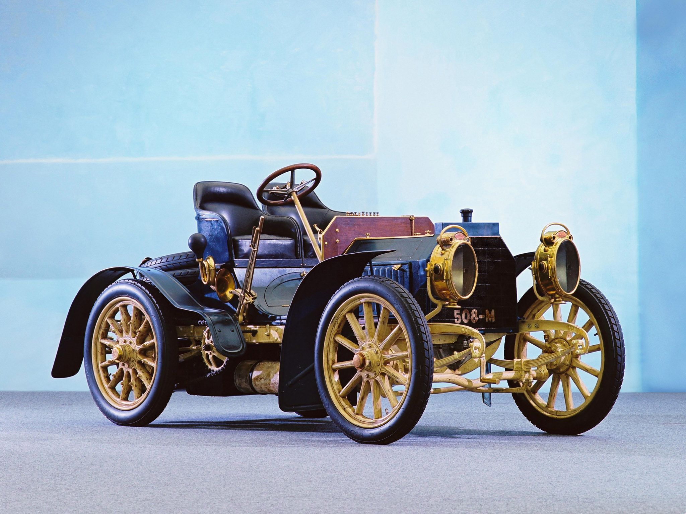

Перший Mercedes-Benz

Перший автомобіль, випущений під брендом "Mercedes-Benz", відомий як Mercedes 35 PS.
Цей автомобіль був представлений у 1901 році. Він був створений Карлом Бенцем, одним зі
засновників компанії Mercedes-Benz. Mercedes 35 PS був автомобілем з двигуном внутрішнього
згоряння з чотирма циліндрами і об'ємом 5,9 літра. Він мав потужність 35 кінських сил і міг
розганятися до швидкості близько 70 км/год. Це була значна швидкість для того часу.
Автомобіль Mercedes 35 PS був відомий своєю надійністю та високою якістю виготовлення.
Він встановив певний стандарт у автомобільній індустрії того періоду. Цей модель був
вироблений у невеликій кількості, і він став важливим кроком в розвитку автомобільного
бренду Mercedes-Benz. Перший Mercedes-Benz встановив початок багаторічної спадщини компанії
в автомобільній індустрії. Mercedes-Benz залишається одним з найпрестижніших брендів
автомобілів у світі, відомим своїми інноваціями, дизайном і високою якістю своїх автомобілів.